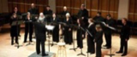

Oct. 14, 2015: Guest lecturer at Bergen senter for Elektronisk Kunst (BEK), Norway.
Oct. 2, 2015: Artist in Residence at USF Verftet in Bergen, Norway with support from the American-Scandinavian Foundation for work on Hunger and other commissions. Three month residency period.

Nov. 29, 2015: World premiere of hunger fragments for sixteen solo voices, commissioned by the NY Virtuoso Singers at National Sawdust, Brooklyn, NY
2015
Nov. 14, 2015: World premiere of gimme shelter for three percussionists, electronics, and video processing, commissioned by Eklekto Percussion. L'Abri – Espace culturel, Geneva, Switzerland.